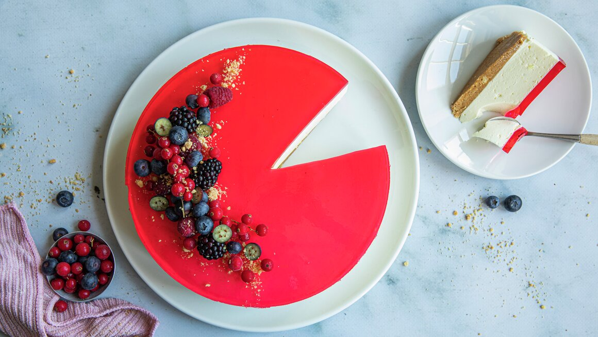

Lorax sin Favoritt Ostekake

Ingridienser:
Kjeksbunn:
250 g digestive kjeks eller kornmo kjeks
100 g smør
1 ss sukker (kan sløyfes)
0,5 ts malt kanel
Ostemasse:
1 pk gelépulver med sitronsmak
2,5 dl vann
3 dl seterrømme
200 g kremost naturell
100 g melis
1 ts vaniljesukker
3 dl kremfløte
Gelélokk:
1 pk gelépulver med bringebærsmak , eventuelt annen smak som jordbær, blåbær, appelsin eller kiwi
2,5 dl vann
ca. 200 g friske bær til pynt
Slik gjør du
Ta ut rømme og kremost en stund før du skal bake.
Når ingrediensene er romtemperert, er det lettere å unngå klumper i ostemassen når du sper inn geléen.
1. Kjør kjeks, sukker og kanel til kakebunnen i en blender eller foodprosessor til kjeksen er knust.
Har du ikke blender kan du også legge kjeksen i en zip-lock pose, og knuse kjeksen med et kjevle eller noe annet som er egnet.
2. Smelt smør og bland det inn i kjeksblandingen.
3. Press ut kjeksblandingen i en bakepapirkledd springform (ca. 24 cm i diameter). Sett formen i kjøleskap mens du lager ostemassen.
4. Kok opp vann i en liten kjele, trekk kjelen av platen og rør inn sitrongelépulver til alt pulveret er løst opp.
5. Rør sammen rømme og kremost i en bolle. Sikt inn melis og vaniljesukker, og rør alt sammen.
6. Visp kremfløte til en luftig og myk krem. Vend kremen forsiktig inn i ostemassen med en slikkepott, slik at mest mulig luft bevares.
7. Sjekk temperaturen på geléen. Den bør ikke være for varm. Ha litt av ostemassen over i kjelen med gelé. Rør det sammen, og spe deretter geléblandingen over i ostemassen i en tynn stråle mens du rører. Du kan også spe geléen direkte i massen, men på denne måten er det lettere å unngå klumper i ostemassen.
8. Hell ostemassen over kjeksbunnen i springformen. Sett en tallerken over, eller dekk til med noe annet egnet, slik at ostemassen står godt beskyttet. Sett kaken i kjøleskap i minst 4 timer.
9. Kok opp vann i en liten kjele, trekk kjelen av platen og rør inn gelépulver til gelélokket. Rør til pulveret er helt oppløst. Avkjøl geléen noe, men den skal fortsatt være flytende når du heller den over ostemassen i formen. Hell gjerne blandingen over baksiden av en spiseskje, da unngår du bobler i geléen eller merker av strålen i ostemassen.
10. Sett formen kaldt til geléen har stivnet, 1-2 timer.
11.Bruk en liten, spiss kniv og skjær langs kanten av springformen. Mens kaken er kald, kan du også enkelt flytte den fra bunnen av springformen over på et kakefat. Bruk gjerne en stor palett eller en kakespade til hjelp.
Valgfritt: Pynt med friske bær, gjerne en blanding av bjørnebær, bringebær, blåbær og rips. Du kan også drysse litt knust kjeks på kaken rett før servering.
Gå til hjemmeside